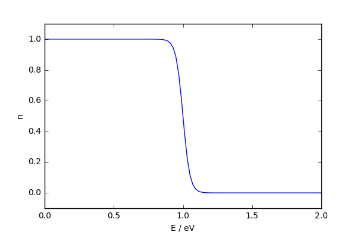
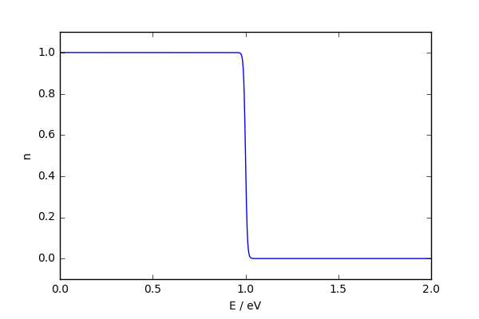

Drude theory of electrons in metals
- Chapter 3 - Solid State Basics, Simon
- Some of chapter 3.3 of Hook and Hall
Learning outcomes¶
you should have
- good knowledge of the classical model of transport by 'electrons'.
- feeling for the magnitude of timescales and energy ranges
- knowledge of phenomena that demonstrate the failure of the model
Classical Electron gas¶
J.J. Thomson discovers electrons in 1896
1900 Paul Drude (Drood-a, apparently) applied kinetic theory to electrons
- electrons have scattering time $\tau$
- on scattering the eletron returns to momentum $\mathbf{p}=0$
- in between scattering, electrons, with charge -e respond to external $\mathbf{E}$ and $\mathbf{B}$ fields
Now consider what happens, on average, between times $t$ and $t + \Delta t$. Two things can happen - either an electron scatters, or it doesn't:
- probability of scattering is $\frac{\Delta t}{\tau}$
- probabliity of not scattering is $1 - \frac{\Delta t}{\tau}$
then
$$ \mathbf{p}(t + \Delta t) = \big( 1 - \frac{\Delta t}{\tau} \big)(\mathbf{p}(t)+ \mathbf{F} \Delta t) + \frac{\mathbf{0} \Delta t}{\tau} $$keeping linear terms and rearranging and taking the limit that $\delta t \to 0$, we get
$$ \frac{d \mathbf{p}}{dt} = \mathbf{F} - \frac{\mathbf{p}}{\tau} $$Electrons in Fields¶
DC Electric fields¶
so in our Drude approximation
\begin{align*} \frac{d \mathbf{p}}{dt} = \mathbf{F} - \frac{\mathbf{p}}{\tau} = -e\mathbf{E} - \frac{\mathbf{p}}{\tau} \end{align*}At steady state we have that the momentum isn't changing
$$ \mathbf{p} = m\mathbf{v} = -e \tau \mathbf{E} $$if the density of electrons in a metal is $n$ then the electric current is given by
$$ \mathbf{j} = -en\mathbf{v} = \frac{-e^2 \tau n}{m} \mathbf{E} $$and the coefficient in front of the field strength is the conductivity
$$ \sigma = \frac{-e^2 \tau n}{m} $$So if we measure the conductivity we can determine the product of the electron density and scattering time.
The resistivity, $\rho$ is the inverse of conductivity - or it is the coefficient relating $\mathbf{j}$ to $\mathbf{E}$ - i.e. $\mathbf{E} = \rho \mathbf{j}$.
Electric and Magnetic fields¶
Now we need the full Lorentz force
$$ \mathbf{F} = -e(\mathbf{E}+ \mathbf{v} \times \mathbf{B}) $$so
\begin{align*} \frac{d \mathbf{p}}{dt} = \mathbf{F} - \frac{\mathbf{p}}{\tau} = -e (\mathbf{E}+ \mathbf{v} \times \mathbf{B}) - \frac{\mathbf{p}}{\tau} \end{align*}For a steady state current, and using $\mathbf{p} = m \mathbf{v}$ and $\mathbf{j} = - ne\mathbf{v}$ we get
$$ 0 = -e\mathbf{E} + \frac{\mathbf{j} \times \mathbf{B}}{n} + \frac{m}{ne \tau}\mathbf{j} $$and rearranging to find $\mathbf{E}$
$$ \mathbf{E} = \frac{1}{ne} \mathbf{j} \times \mathbf{B} + \frac{m}{ne^2 \tau}\mathbf{j} $$Now if we look at the connection between $\mathbf{E}$ and $\mathbf{j}$ we need to define a 3x3 matrix $\rho$.
\begin{align*} \mathbf{E} = \begin{pmatrix} \rho_{xx} & \rho_{xy} & \rho_{xz} \\ \rho_{yx} & \rho_{yy} & \rho_{yz} \\ \rho_{zx} & \rho_{zy} & \rho_{zz} \end{pmatrix} \mathbf{j} \end{align*}Hall effect and magnetoresistance¶
Filling in the values using our Drude theory and only applying a magnetic field in the $z$ direction, so $\mathbf{B} = (0,0,B)$, we have:
\begin{align*} \mathbf{E} = \begin{pmatrix} \frac{m}{ne^2\tau} & \frac{B}{ne} & 0 \\ -\frac{B}{ne} & \frac{m}{ne^2\tau} & 0 \\ 0 & 0 & \frac{m}{ne^2\tau} \end{pmatrix} \mathbf{j} \end{align*}The Hall coefficient $R_h$ is defined as
$$R_H = \frac{\rho_{yx}}{|B|} = \frac{-1}{ne}$$$\rho_{yx}$ is called the (transverse) magnetoresistance.
The Hall coefficient $R_h$ is defined as
$$R_H = \frac{\rho_{yx}}{|B|} = \frac{-1}{ne}$$$\rho_{yx}$ is called the (transverse) magnetoresistance.
Notice it only depends on the electron density! So by measurements of the voltage perpendicular to the current and the magnetic field, we can measure the density of electrons in the metal.
If we believe the measurements and Drude theory, we can also extract the scattering time by measuring the conductivity too.
AC response to electric field¶
Suppose we apply a time-dependent electric field
$$ \mathbf{E}(t) = \text{Re}(\mathbf{E}(\omega)e^{-i\omega t}) $$where Re means the real part of the thing in brackets (so here a cosine term). Our equation of motion for $\mathbf{p}$ is
\begin{align*} \frac{d \mathbf{p}}{dt} = -e\mathbf{E} - \frac{\mathbf{p}}{\tau} \end{align*}We need a steady state solution where the electrons move at the same frequency as the driving field. So
$$ \mathbf{p}(t) = \text{Re}(\mathbf{p}(\omega)e^{-i\omega t}) $$plugging in and cancelling the exponential terms leads to
$$ i \omega \mathbf{p}(\omega) = -e\mathbf{E} - \frac{\mathbf{p}(\omega)}{\tau} $$As the current density, $\mathbf{j} = -ne \mathbf{p}/m$ we find
$$ \mathbf{j}(\omega) = -\frac{ne\mathbf{p}(\omega)}{m} = \frac{(ne^2/m) \mathbf{E}(\omega)}{(1/\tau)-i\omega} $$Again, taking the proportionality between $\mathbf{j}$ and $\mathbf{E}$ as
$$ \mathbf{j}(\omega) = \sigma(\omega) \mathbf{E}(\omega) $$where
$$ \sigma(\omega) = \frac{\sigma_0}{1-i\omega \tau}, \sigma_0 = \frac{ne^2 \tau}{m} $$opacity - electrodynamics¶
can a metal transmit an electromagnetic wave?
We can use Maxwell's equations and the expression for $\mathbf{j}$ we just found to explore this in the classical (and long wavelength) limit.
Remember from electrodynamics, if no (induced) charge is present
We look for a solution with a time dependence $e^{-i\omega t}$.
Take the curl of both sides of the curl of $\mathbf{E}$
$$ \mathbf{\nabla} \times \mathbf{\nabla} \times \mathbf{E} = - \mathbf{\nabla} \times \frac{\partial \mathbf{B}}{\partial t} $$Now two pieces of info are needed
$$ \mathbf{\nabla} \times \mathbf{\nabla} \times \mathbf{E} = \mathbf{\nabla}(\mathbf{\nabla}. \mathbf{E}) - \mathbf{\nabla}^2 \mathbf{E} = - \mathbf{\nabla}^2 \mathbf{E} $$and
$$ - \mathbf{\nabla} \times \frac{\partial \mathbf{B}}{\partial t} = - \frac{\partial ( \mathbf{\nabla} \times \mathbf{B}) }{\partial t} $$Now plugging in, and using another of the Maxwell equations we get
$$ - \mathbf{\nabla}^2 \mathbf{E} = - \frac{\partial }{\partial t} \Big[ \mu_0 \big( \mathbf{j} + \epsilon_0 \frac{\partial \mathbf{E}}{\partial t} \big) \Big] $$now we substitute in our expression for $\mathbf{j}$ and perform the time derivatives (which just give us a factor of $i\omega$) to get
\begin{align*} - \mathbf{\nabla}^2 \mathbf{E}(\omega) e^{-i\omega t} & = & - \mu_0 \frac{\partial }{\partial t} \Big[ \sigma (\omega) \mathbf{E}(\omega) e^{-i\omega t} + \epsilon_0 \frac{\partial \mathbf{E}(\omega)e^{-i\omega t}}{\partial t} \Big] \\ & = & - \mu_0 \frac{\partial }{\partial t} \Big[ \sigma (\omega) \mathbf{E}(\omega) e^{-i\omega t} - \epsilon_0 i \omega \mathbf{E}(\omega)e^{-i\omega t} \Big] \\ & = & i \omega \mu_0 \Big[ \sigma (\omega) \mathbf{E}(\omega) e^{-i\omega t} - \epsilon_0 i \omega \mathbf{E}(\omega)e^{-i\omega t} \Big] \end{align*}which implies
\begin{align*} - \mathbf{\nabla}^2 \mathbf{E}(\omega) & = & i \omega \mu_0 \Big[ \sigma (\omega) \mathbf{E}(\omega) - \epsilon_0 i \omega \mathbf{E}(\omega) \Big] \\ & = & \omega^2 \mu_0 \Big[ \epsilon_0 + \frac{i \sigma (\omega)}{\omega} \Big] \mathbf{E}(\omega) \\ & = & \frac{\omega^2 }{c^2} \Big[ 1 + \frac{i \sigma (\omega)}{\epsilon_0 \omega} \Big] \mathbf{E}(\omega) \end{align*}this is the standard form of a wave equation with a complex dielectric function
$$ \epsilon (\omega) = 1 + \frac{i \sigma (\omega)}{\epsilon_0 \omega} $$where $\sigma (\omega)$ is our Drude AC conductivity.
Plasmons¶
The plasmon was initially proposed in 1952 by David Pines and David Bohm and was shown to arise from a Hamiltonian for the long-range electron-electron correlations.
Plasmons are an example of collective behaviour of a system (metal here). We can find a classical description of how they behave in a metal using our expression for the current, the law of conservation of charge and Gauss's law
$$ \nabla . \mathbf{j} = - \frac{\partial \rho}{\partial t} $$when the density has a oscillatory time dependence we have
$$ \nabla . \mathbf{j}(\omega) = - i \omega \rho (\omega) $$and using Gauss's law,
$$ \nabla . \mathbf{E}(\omega) = \frac{ \rho(\omega)}{\epsilon_0} $$and using our relationship between $\mathbf{E}$ and $\mathbf{j}$
we get
$$ i \omega \rho (\omega) = \frac{\sigma(\omega) \rho(\omega)}{\epsilon_0} $$which has a solution if
$$ 1 + \frac{i \sigma(\omega)}{\epsilon_0 \omega} = 0 $$which corresponds to the plasma frequency again.
Quantizing these oscillations (so like Photons are quantized oscillations in free space) produces plasmons ...
Uses and properties¶
- Metals are shiny! Plasma frequency is often in the UV
- Surface Polarons
- Surface enhanced Raman spectroscopy
- Control the colour of materials
- Sensors
- Improve Photovoltaics and LEDs
- Interact with photons to produce plasmon-polaritons (Light-excitons)
Drude model of Thermal Transport¶
Using kinetic theory (basically ideal gas) we can estimate the thermal conductivity $\kappa$ of free electrons.
Kappa is defined by the ratio of heat current density $\mathbf{j}_q$ to temperature gradient $\nabla T$
$$ \mathbf{j}_q = \kappa \nabla T $$Then by considering a flux of electrons that carry an amount of heat $c_v T$ at a velocity $ \langle v \rangle$ for a distance $\lambda$ we get
$$ \kappa = \frac{1}{3}nc_v \langle v \rangle \lambda $$where $c_v$ is the heat capacity per particle (electron), $ \langle v \rangle$ is the average thermal velocity and $\lambda = \langle v \rangle \tau$ is the scattering length.
Assuming that electrons behave like a gas (?), we would expect that $c_v = \frac{3}{2}k_B$ and the average velocity is $ \langle v \rangle = \sqrt{\frac{8 k_B T}{\pi m}}$
we get
$$ \kappa = \frac{4}{\pi} \frac{n \tau k_B^2 T}{m} $$and if we assume that the $\tau$ is the same as before we could look at the ratio of thermal to electrical conductivity to get a value for the Lorenz number $L$
$$ L = \frac{\kappa}{T\sigma} = \frac{3}{2} \left( \frac{(k_B)}{e} \right)^2 \approx 0.94 \times 10^{-8} W \Omega K^{-2} $$This constant ratio is known as the Wiedemann-Franz law.
We will see later that our guess at $c_v$ is way to big (ignoring the quantum) and our $ \langle v \rangle$ is way to small. The former is important - no measurements revealed a heat capacity of electrons of this magnitude!
Peltier effect¶
If we run an electrical current through a material we should also transport heat. The Peltier coefficient is defined by
$$ \mathbf{j}_q = \Pi \mathbf{j} $$Using our classical kinetic theory the thermal current is $\mathbf{j}_q = \frac{1}{3} (c_v T) n \mathbf{v}$ and $\mathbf{j} = -ne\mathbf{v}$ thus giving
$$ \Pi = -\frac{c_v T}{3e} = -\frac{k_BT}{2e} $$So the ratio $S = \Pi / T$ (called the Seebeck coeffiecient) should be a constant
$$ S = \frac{\Pi }{T} = -\frac{k_B}{2e} = -4.3 \times 10 ^{-4} V / K $$in Drude theory.
But $S$ of Pt is $\approx 1.0 \times 10^{-6} V/K$
| Material | Seebeck coefficient(relative to platinum) (μV/K) |
|---|---|
| Selenium | 900 |
| Silicon | 440 |
| Germanium | 330 |
| Molybdenum | 10 |
| Gold, silver, copper | 6.5 |
| Rhodium | 6.0 |
| Lead | 4.0 |
| Aluminium | 3.5 |
| Carbon | 3.0 |
| Mercury | 0.6 |
| Platinum | 0 (definition) |
| Sodium | -2.0 |
| Potassium | -9.0 |
| Nickel | -15 |
| Constantan | -35 |
| Bismuth | -72 |
Failures of the classical theory¶
- variable sign of the Hall coefficient
- dielectric function much too simple
- heat capacity of electrons grossly overestimated
- infer that the mobility of electrons is grossly underestimated
- Thermopower off by factor of ~100
Sommerfeld (Free Electron) theory - just a little bit quantum¶
In 1925 Pauli discovered the exclusion principle - no two electrons can be in the same state.
This changes the 'statistics' and Fermi and Dirac together (at least in name, see Stigler's Law of Eponymy) derived Fermi-Dirac statistics.
Sommerfeld combined Fermi-Dirac statistics with Drude's theory of metals.
Which we'll try and do ...
Fermi-Dirac Statistics¶
Given a system of free electrons with chemical potential $\mu$ the probability of an energy level $E$ being occupied is
$$ n_F(\beta(E-\mu)) = \frac{1}{e^{\beta(E-\mu)} +1} $$where $\beta = \frac{1}{k_B T}$ controls how it changes with temperature.
Fermi-Dirac distribution 
"filling the bus"
Bose-Einstein distribution
 "more sociable"
"more sociable"
Electron gas in a box¶
Lets put our (free) electrons in a box of size $V = L^3$ - the quantum requires them to satisfy the Schroedinger equation
$$ -\frac{\hbar^2}{2m}\nabla^2 \psi = \epsilon \psi $$We'll use periodic boundary conditions. Mathematically this requires that
$$ \psi(x+L,y+L,z+L) = \psi(x,y,z) $$this is basically the same as the particle in a box you did last year in quantum
Plane-waves¶
$$ \psi(x,y,z) = \frac{1}{\sqrt{V}}e^{i\mathbf{k}.\mathbf{r}}= \frac{1}{\sqrt{V}}e^{i(k_x x + k_y y + k_z z)} = \frac{1}{\sqrt{V}}e^{ik_x x} e^{ik_y y} e^{ik_z z} $$the $\frac{1}{\sqrt{V}}$ ensures that the wavefunctions are normalised and (quantum)
$$ k_x = \frac{2 \pi p}{L}, k_y = \frac{2 \pi q}{L}, k_z = \frac{2 \pi r}{L}, p,q,r \in \mathbb{Z} $$($p,q$ and $r$ taking integer values).
The energy of the electrons is
$$ \epsilon = \frac{\hbar^2 |\mathbf{k}|^2}{2m} $$To find the total number of electrons we add up the number of electrons in each state.
$$ N = 2 \sum_{\mathbf{k}}n_F(\beta(\epsilon(\mathbf{k}-\mu))) = 2 \frac{V}{2 \pi}^3 \int \mathbf{dk} n_F (\beta(\epsilon(\mathbf{k}-\mu))) $$the two comes from the number of spin states.
If we know the number of electrons in the system, then this defines our chemical potential.
We'll look at how we go from the sum to the integral in the problem class - it comes up frequently.
The fermi energy is the chemical potential at T = 0
What does this mean? At T=0 the Fermi function becomes a step function:

so our expression for the number of electrons in our periodically repeating box is given by
\begin{align*} N & = & 2 \sum_{\mathbf{k}}n_F ( \beta(\epsilon(\mathbf{k}-\mu)) )\\ & = & 2 \frac{V}{2 \pi}^3 \int \mathbf{dk} n_F (\beta(\epsilon(\mathbf{k}-\mu))) \\ & = & 2 \frac{V}{2 \pi}^3 \int \mathbf{dk} \Theta(E_f -\epsilon(\mathbf{k} )) \\ & = & 2 \frac{V}{2 \pi}^3 \int_{0}^{|k| < k_F} \mathbf{dk} \end{align*}where the fermi wavevector $k_F$ is the wavevector at the Fermi energy
The Fermi wavevector, $k_F$, defines a surface, called the Fermi surface.
The Fermi surface divides filled states from empty states.

where the fermi wavevector $k_F$ is the wavevector at the Fermi energy
$$ E_F = \frac{\hbar^2 k_F^2}{2m} $$the final integral is over a ball of radius $k_F$, so we get
$$ N = 2 \frac{V}{2 \pi}^3 (\frac{4}{3}\pi k_F^3) $$The electron density is the number of electrons divided by the volume, $n = N/V$ which lead to
$$ k_F = \frac{(3 \pi^2n)^{2/3}}{2m} $$and
$$ E_F = \frac{\hbar^2(3\pi^2n)^{2/3}}{2m} $$if we can estimate the electron density, we can estimate the Fermi energy and wavelength.
Heat capacity¶
all we need to do is take the derivative of $E_{total}$ with respect to temperature ... but this is non trivial.
A back of the envelope calculation goes as follows
- Assume that $\mu$ is $E_F$
- Only molecules within $\approx k_B T$ can be excited, and they are excited by $\approx k_B T$, then
then $C_V = \frac{\partial E}{\partial T} \approx \text{some constant})[V g(E_F)(k_B T)](k_B)$
and rearranging our expression for the density of states we get
$$ C_V = (\text{some constant})(\frac{3N k_B}{2})\frac{T}{T_F} $$so the electronic $C_V$ is temperature dependent (linear), and greatly reduced from the classical $C_V = \frac{3N k_B}{2}$ if $T_F$ is larger than $T$.
Drude vs Somerfeld¶
Reduced availability of electrons explains several deficiencies in Drude's model, but still some unexplained things:
- variable sign of the Hall coefficient
- dielectric function much too simple